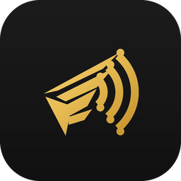

EsoAgentFleet control, unifiedEsoAgent is a self-hosted fleet platform that unifies what TeamViewer, Tailscale and SSH each do separately — remote desktop, shell, files, mesh networking — and adds an operator-grade perception stack none of them has. One product, one device registry, one activity timeline.
Windows & Linux · self-contained installers · no account, no cloud, no subscription — your fleet server is yours.
Most tools cover one plane well. EsoAgent was designed as all five, sharing one identity, one audit trail, and one trust model: the server relays — it can never forge.
Shell and exec as SYSTEM/root, durable jobs that survive restarts, process supervision, a fleet script library, device scheduled tasks, OS patch management, and fleet-wide signed update rollouts with rollback.
Live desktop direct or relayed through your fleet server, in the app or the browser. Privacy mode, in-session chat, consent gates, session recording, and quality-floored adaptive streaming that never silently degrades.
A WireGuard mesh with stable virtual IPs and name resolution, subnet routing, exit nodes, and TCP/UDP/SOCKS5 tunnels to anything a device can reach.
One-call diagnostics (“what's the problem?”), deep telemetry, crash watch — and a perception stack that reads UI structure and app data as data, not screenshots.
One registry, one unified activity timeline, health dashboards, alerts with signed webhooks, owner 2FA, per-capability toggles, and access codes — temporary, scoped, revocable control grants.
Every operator action is signed by a key the fleet server never holds. A compromised server can relay nothing it wasn't given — it cannot forge a single command.
Techniques from EsoAgent that appear in no competitor we surveyed (44 systems). Each is measured, not marketed — see BENCHMARKS.md.
UI trees → app data APIs → event streams → semantic renders → delta pixels → screenshots last. The operator sees machines the way machines see themselves: as structured data.
The agent remembers the last state and sends structural diffs only — a full inventory is 5,884 bytes once, then 132 bytes when nothing changed.
One declarative call — “ensure this service is running” — executed and verified on the device, returning a compact proof object instead of twenty round-trips.
Blender, Unreal and Godot scenes as diffable JSON, with object-ID render passes that make bounding boxes and coverage exact — computed from data, never estimated from pixels.
Every perception response reports its own cost in bytes. Knowing the screen is a measured, budgeted operation — cheaper and more accurate than a screenshot.
Hand someone a short code: they get a signed, scoped, expiring grant for one device. No account, no password sharing — and you can revoke it mid-session.
Plain-language first, engineering depth one click deeper.